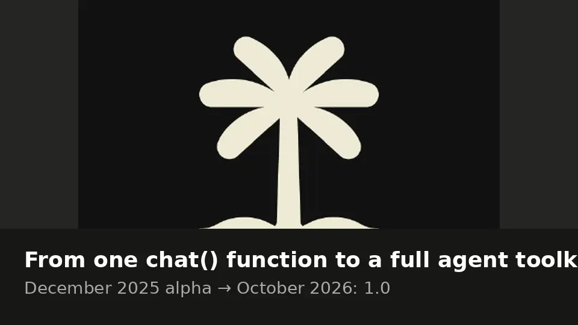
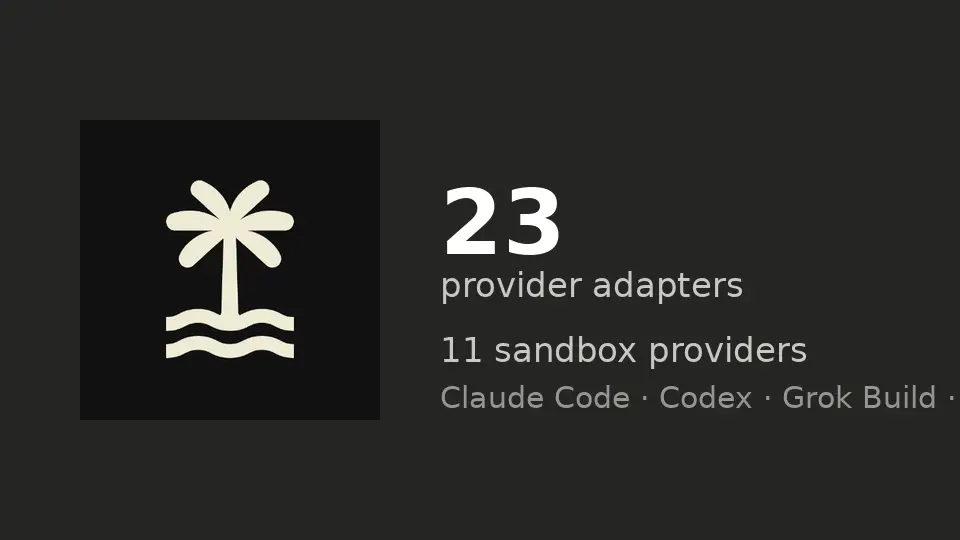

TanStack AI hits 1.0: the lock-in-free agent toolkit goes stable
- Who: TanStack — still a three-person maintainer team with 143 contributors; the 1.0 announcement is signed by Alem Tuzlak, Jack Herrington, Tom Beckenham, and Tanner Linsley
- What: TanStack AI 1.0 — stable core APIs for chat, tools, media, MCP, persistence, sandboxes, and agents, plus an experimental agent harness
- When: October 23, 2026
- Scale: 23 provider adapters (plus openaiCompatible for any OpenAI-style API); eight UI frameworks plus vanilla JS; 11 sandbox providers; coding-agent support for Claude Code, Codex, OpenCode, Grok Build, and any ACP agent
- Timeline: alpha in December 2025 → architecture locked in the August 2026 release candidate → 1.0 in October 2026; named “AI Project of the Year” at the Open Source Awards in June 2026
- Upgrade: one codemod plus a type check; every API deprecated in 0.x is removed, and all stable @tanstack/ai* packages must move to 1.0 together
TanStack shipped version 1.0 of TanStack AI today, stabilizing the open-source toolkit that lets developers build chat interfaces, agents, MCP servers, and sandboxed coding workflows across providers and frameworks — keeping the lock-in-free promise it started with. The release also introduces an experimental agent harness with durable sessions, typed subagents, and standard AG-UI events.
The promise that held
In December 2025, TanStack AI was a chat() function, four provider adapters, and one promise: “no lock-in, ever.” The 1.0 announcement says the promise held: your provider, your framework, your sandbox, and the wire protocol between them are still yours to pick.
A lot grew in between. That one function became a toolkit for chat, tools, media, MCP, persistence, sandboxes, and agents, with 23 provider adapters plus openaiCompatible for any OpenAI-style API, eight UI frameworks alongside vanilla JavaScript, and support for Claude Code, Codex, OpenCode, Grok Build, and any ACP coding agent. Sandbox support went from none to 11 providers. The team is still three maintainers — with 143 contributors — and OpenRouter has backed the project since the beginning. Back in June it was named “AI Project of the Year” at the Open Source Awards.
What’s new since the release candidate
The architecture locked in with the August release candidate; the last two months were pure feature work. New since then: subagents in chat() and useChat; decide() for typed choice, score, and boolean decisions; Portable Agent Skills, letting any tool-calling model load SKILL.md files when it needs them; Compaction to keep long chats under context limits; computer use that runs the same code on OpenAI and Anthropic; a unified chat({ reasoning }) option typed per model; automatic prompt caching; chat({ retry }) for rate-limited calls; one interface over every provider’s Files API; bring-your-own-key; and sign-in with ChatGPT, GitHub Copilot, OpenRouter, or a Claude OAuth token.
MCP gets a real push: createMCPServer serves TanStack tools as an MCP server for Claude Desktop, Cursor, and any other MCP host, and WebMCP works in both directions. Provider coverage grew too — new adapters include Cloudflare Workers AI, Azure OpenAI, Lovable AI Gateway, World Labs Marble, TypeSafe, and Ollaya — alongside five new sandbox providers: Blaxel, Upstash Box, E2B, boxd, and Railway. Every hand-written docs page was rewritten for 1.0, each opening with a problem and a setup you can copy and run in minutes.

The harness is the headline
The most consequential addition is the experimental @tanstack/ai-harness: define a harness once with the same options as chat(), then open a session per conversation. Sessions are durable — a turn that a crash or a deploy cuts continues on the next host, as long as you hand it a store that survives restarts. Waits survive restarts too: an approval, a question, or a sign-in pauses the run in the log, and any server can pick up the answer afterward.
Sessions can run typed agents in parallel or in series with budgets and timeouts, package tools and prompts as plugins, and run background workers on schedules. The run route speaks standard AG-UI events, so useChat works against a harness — with approvals, and a page reload that rejoins the running turn. The first-party plugins bundle file tools, permissions, /undo, a todo list, /compact, and /usage — enough to build a coding agent in the terminal, then hand work to Claude Code, Codex, Grok Build, or any ACP agent, each in its own sandbox.
The harness is deliberately experimental: it ships as 0.x, separate from the stable core, and its APIs can change in a minor release. The team also documents the recovery limits — in-memory child-agent waits don’t resume across hosts.

Upgrading from 0.x
For most apps, the announcement says, it’s one codemod and a type check: every API that 0.x marked deprecated is gone, and every replacement already shipped in 0.x. Upgrade all stable @tanstack/ai* packages together — a 1.0 client needs a 1.0 server — and drop @tanstack/ai-react-ui, -solid-ui, and -vue-ui, which have no 1.0 releases. threadId is now required on both client and server, and stored conversations from 0.x need the saved-data steps before deploying. “1.0 is our formal commitment to the APIs you build on,” the team writes.
Frequently asked questions
What is TanStack AI?
A framework-agnostic, open-source toolkit for building AI features — chat, agents, tools, media, MCP, and sandboxes — where you pick the provider, the UI framework, and the sandbox. It began as a chat() function with four providers in December 2025 and reached 1.0 on October 23, 2026.
What does 1.0 stabilize — and what stays experimental?
The core APIs for chat, tools, media, MCP, persistence, sandboxes, and agents are stable and production-ready. The new agent harness (@tanstack/ai-harness) ships separately as 0.x and is explicitly experimental: its APIs can change in a minor release.
How do I upgrade from 0.x?
Run the codemod, update every stable @tanstack/ai* package to 1.0 at the same time, remove the three dropped UI packages (@tanstack/ai-react-ui, -solid-ui, -vue-ui), run the type checker, and apply the saved-data steps to any stored conversations before deploying.